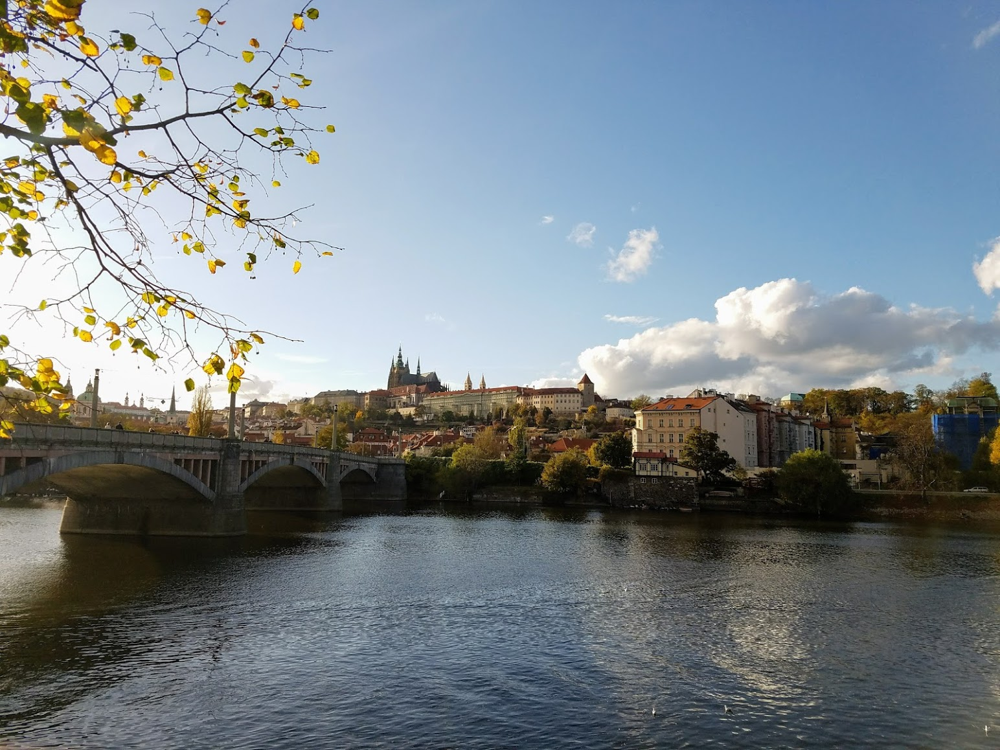
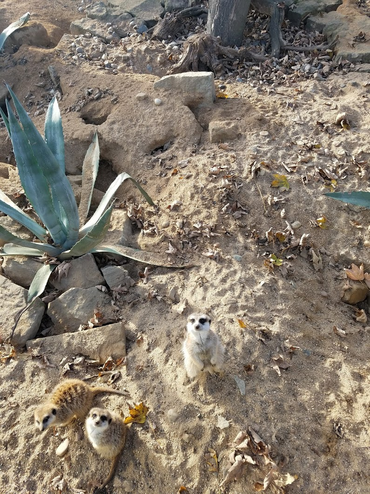
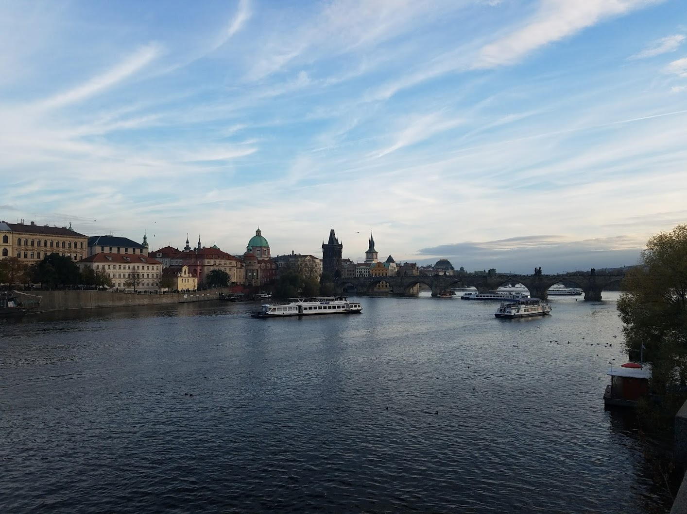
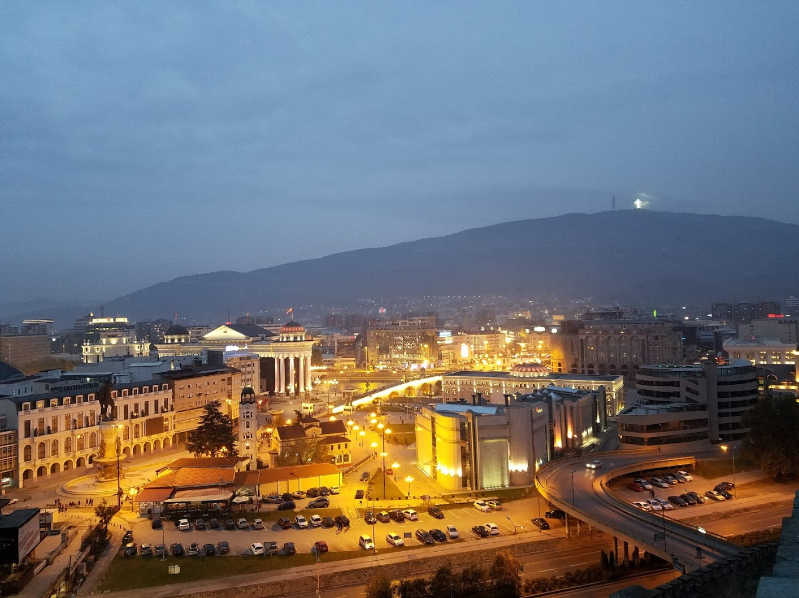
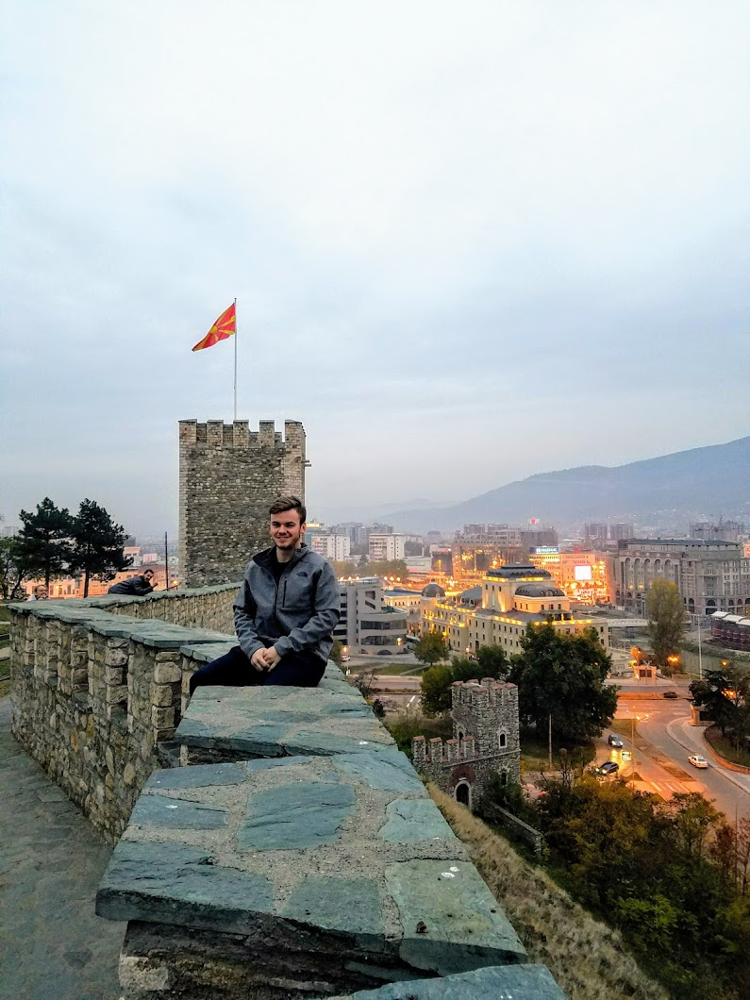
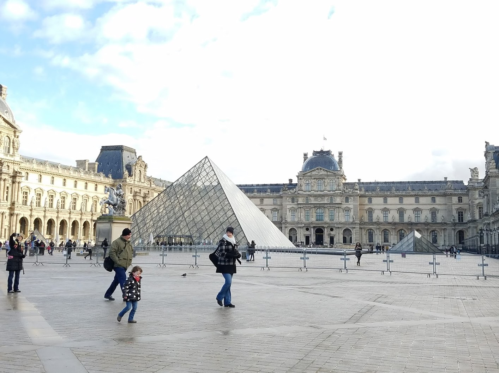
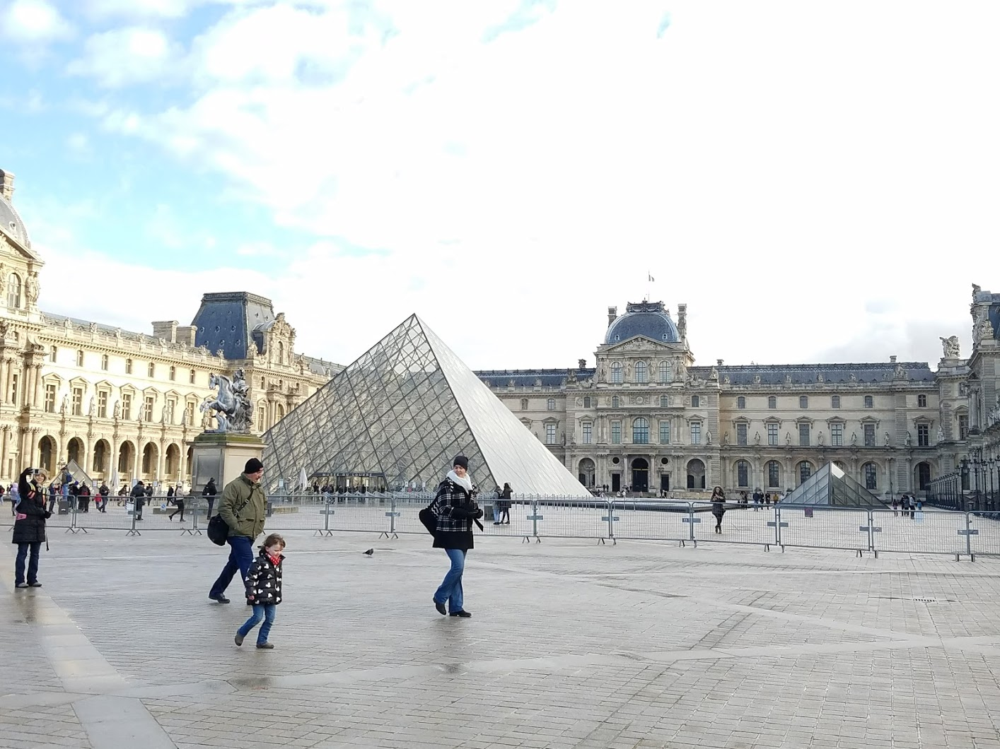

My Travels
My Travels  My Travels
My Travels | Prague | Macedonia | Paris |
|---|---|---|
| Prague was an amazing city with a beautiful landscape and a fun social scene. Among other things, I visited Prague's zoo which is ranked 5th best in the world by Trip Advisor. At the surface, going to the zoo doesn't seem too special but Prague's zoo is special because it focuses on the animals' comfort. Like Prague, many of the cities in Europe that I visited focus on the community, making the people much more humble and humane. I feel like Prague's zoo is a testament to how the people in Prague, and all throughout Europe, feel in regards to their place in the world and how we should all work together to make this a better place to live. | Macedonia was a place like no other. Being an Eastern European country, it is very different from the rest of Europe and MUCH more different than America. I was lucky enough to make a friend while abroad who has lived in Macedonia and could give me a more in-depth view of what living in that part of the world is like. I spent my weekend in Macedonia in the capital city Skopje. There is a large Muslim presence in the city, a culture that prior to going abroad, I knew only what I saw in the news, and was pleasantly surprised with how different it actually is. After my trip to Macedonia and my other encounters throughout my semester, I had a much more positive perception of those who practice Islam. | As a part of the program, I aslo spent an entire week in Paris where we explored the French culture. Paris is like many other major cities across the globe in that many of its people push to make a positive social change. Artists in Paris take to the streets with spray paint, stamps, etc. to express their grievances with the system and raise awareness for these issues. Home to the largest art museum in the world, Paris is a major hub for all artists who seek to succeed and bring about change. |
|

  |

 |
 

|